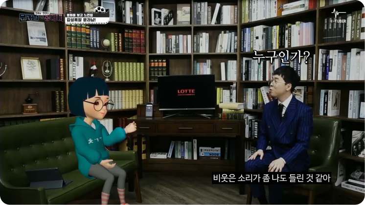
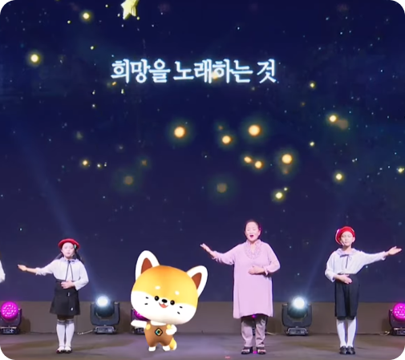

라이브 방송에 최적화된
솔루션을 경험 해보세요
꾸준한 소통으로 공감대를 형성하세요

캐릭터 2D 이미지가
있다면 모든 준비 끝!
3D 제작부터 소프트웨어를 통한 라이브 방송까지 한번에 이루어지고 있어요
소프트웨어의 다양한 기능을 활용해
편하고 쉽게~
-

크로마키
-

멀티카메라 기능
-

손쉬운 애니메이션 구현
-

실시간 화면 연동 기능
-

각종 자료화면 송출
-

실시간 표정 연계
콘텐츠 제작 솔루션을 통해
전문성있고 다양하게

인터뷰, 행사, 숏폼 등
모든 동영상 제작을
한번에!
